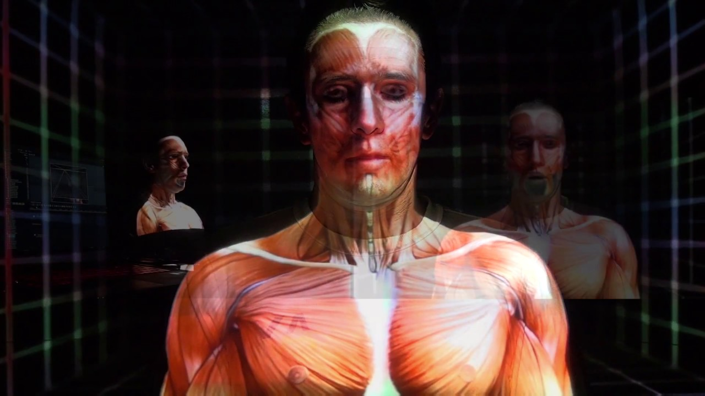
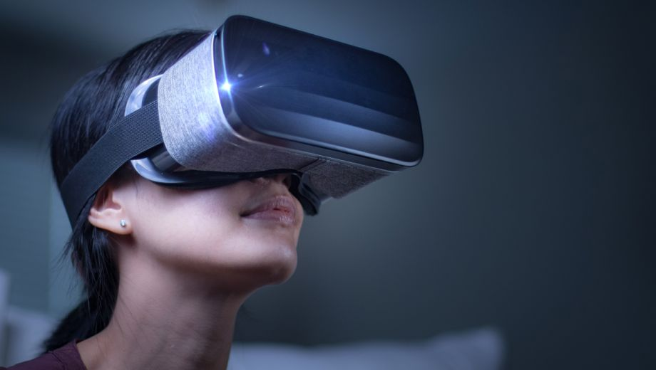

Het hoorcollege virtual /augmented reality werd gegeven door William Beekhuis. Er werd ons verteld wat virtual reality en augmented reality is en de verschillen tusen VR en AR zijn. William liet ons voorbeelden zien, van hele toffe dingen! Na het college heb ik het assignment gemaakt, andere projecten binnen VR /AR gezocht en gereflecteerd op dit onderwerp. Hiernaast ben ik ook zelf aan de slag gegaan tijdens een van de workshop.
Assignment
Tijdens de hoorcolleges zijn veel voorbeelden laten zijn, de opdracht die ons is gegeven om nu zelf met VR of AR concepten te komen. Ik heb gekozen om volgende drie onderwerpen uit te werken: Onderwijs/Onderzoek, Angst/Therapie en het openbaar vervoer.
Onderwijs/onderzoek
 Het leren uit boeken en luisteren naar saaie hoorcolleges is voor sommige studenten erg zwaar te volgen en door op een nieuwe manier les te geven kan studeren echt waardevol worden. Door het toepassen van VR of AR in een studie kan ieder vakgebied leuker en waardevoller gemaakt worden maar ik neem nu het voorbeeld bij de opleiding fysiotherapeut. Door projection mapping toe te passen op echte lichamen kan er heel duidelijk worden laten zien welke spieren waar zitten/ wat er mis mee is zodat studenten een veel duidelijker beeld krijgen waar de spieren zitten hoe een scheurtje vormgeeft in de spier en wat voor een gevolg dit heeft.Angst /therapie
 Iedereen is wel ergens bang voor; is het geen hoogte zijn het wel spinnen, of desnoods de angst voor knieën, ja wel het bestaat echt. Om van je angst af te komen kun je in een dure wekelijkse therapie gaan, maar zou het niet veel makkelijker zijn om je angsten te verwerken op ieder moment op iedere plek die jou uitkomt? Wanneer er middels een VR bril angst therapie kan worden gevolgd, kan hiermee bereikt worden dat het voor veel meer mensen beschikbaar wordt en mensen sneller van hun angst af geholpen kunnen worden.Openbaar vervoer
Het reizen met het OV is vaak slecht geregeld, volle coupes en tijdens het instappen getrek en geduw. Door augmented reality toe te passen op stations kan er worden duidelijk worden weergeven bij iedere nieuwe trein, waar de mensen moeten staan op het perron om zo dicht bij de ingangen in te kunnen stappen in de trein waar genoeg plek is. Wat hiermee bereikt wordt is dat reizigers worden verdeeld over de trein zodat er gemiddeld overal evenveel passagiers in de trein bevinden, en het zorgt er voor dat mensen dichter bij de deuren staan en dus sneller kunnen instappen.Research
ECHO Experience.
De makers van het spel ‘The Division 2 hebben voor hun gebruikers een hele toffe feature ontworpen genaamd : ECHO Experience. Met deze feature kan de gebruiker in totaal 50 ‘ECHO’s’ verzamelen die geplaatst zijn op echte plekken in de buurt van de gebruiker. Met de verzamelde ’ECHO’s’ verdienen de spelers extra punten in de hoofd game ‘The Division 2. ‘Om de ‘ECHO’s’ te verzamelen moet de speler fysiek naar deze plek toe gaan. Ik vind dit een super gaaf concept omdat de spelers van het spel hierdoor zich naast het spelen van de game zich nog meer kunnen inleven in de virtuele wereld van The Division.Reflection
Het onderwerp VR en AR vind ik super interessant, het lijkt me dan ook erg leuk om hiermee ooit iets gaafs maken. Tijden het werkcollege ben ik met andere studenten aan de slag gegaan en vond ik dit ook de leukste workshop die ik heb gevolgd tijdens HCI.